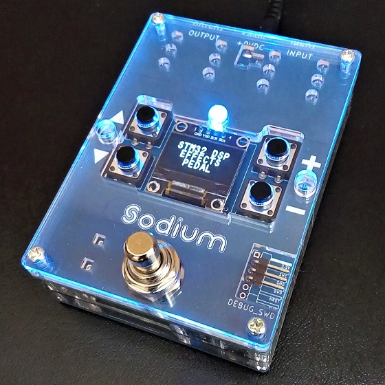
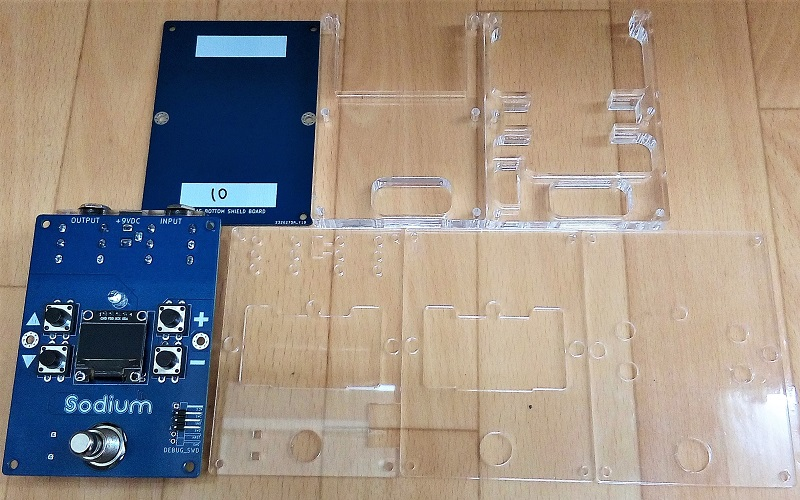
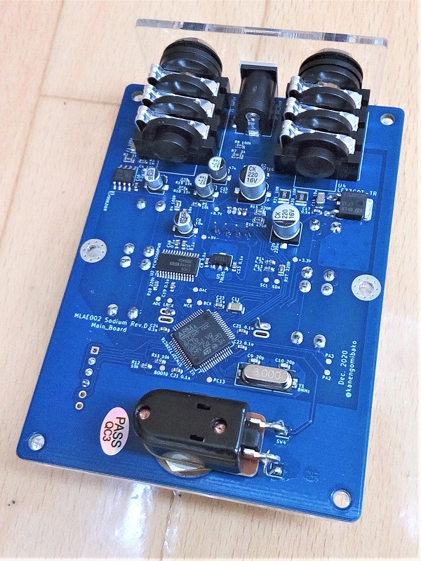
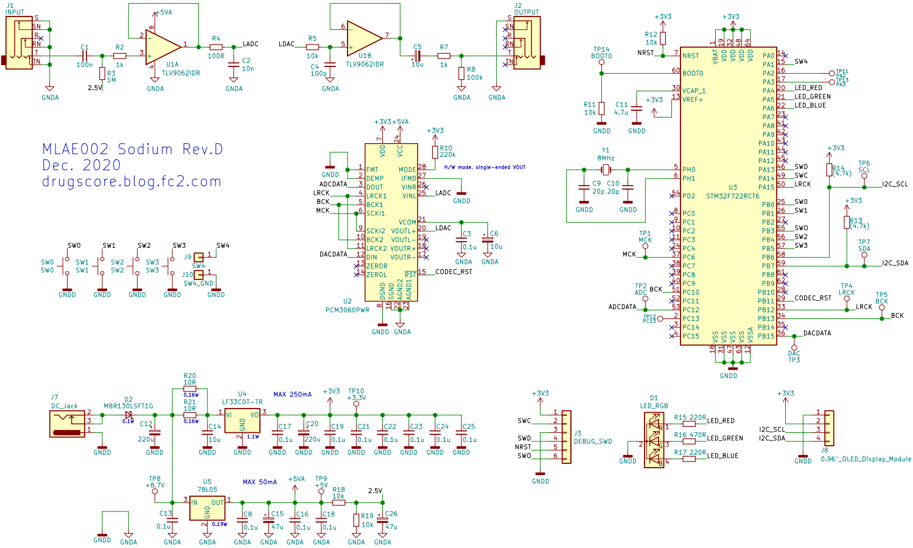
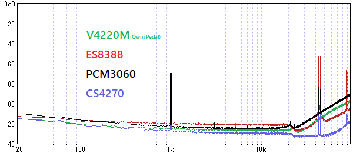
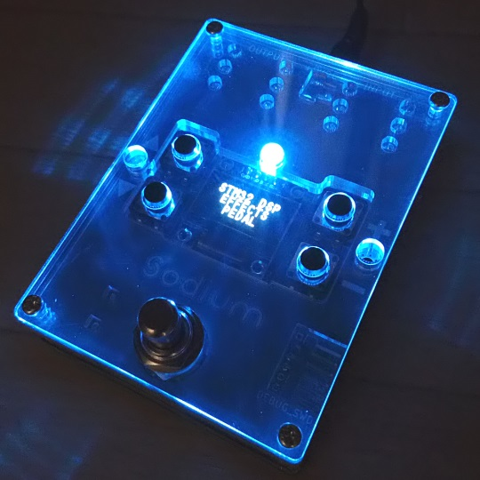

Sodium
2021年01月12日 カテゴリー：STM32

自分でプログラミング可能なエフェクターは高価なものが多く（2～3万円）、デジタルエフェクターを始める上でのハードルの一つとなっていると思います。そこで、低価格なデジタルエフェクター入門機の販売に向けて製作したのがこのペダルです。
→【販売ページはこちら】
金属ケースの加工は自分で行うには大変すぎるし、外注すると高額になってしまうので、Elecrowのアクリル加工サービスを利用した筐体となっています。本体は下写真のように基板とアクリル板計7枚から構成されています。アクリルのデータもKiCadで作成しました。（図面データはGitHubへ）

メイン基板は表面実装部品のみElecrowのPCBA（部品実装）サービスを利用しました。詳細は別記事にまとめる予定です。
▽回路図（KiCadデータはGitHubへ）

最低限の機能ということで、ステレオ不可、入出力は単純な1次ローパスフィルタとなっています。レギュレータはそれなりの発熱が予想されたため、抵抗器を入れるといった対策を行っていますが、実測では消費電流150mA程度だったのであまり要らない心配だったかもしれません。
操作系は以前製作したSrempyと同じで、ディスプレイとスイッチ5つという構成です。ポットだとどうしてもフットスイッチとの干渉が気になりますし、ディスプレイを付けたかったのでこの形になりました。
オペアンプはOwm PedalではOPA1678でしたが、入力がRail to Railでないことに気づいていませんでした。やはり許容入力が大きい方がよいので、TLV9062（5V駆動可、入出力Rail to Rail）を使っています。未検証ですがGS8632もよいかもしれません。（TL072等を9V駆動で使い、オーディオコーデックの入出力にカップリングコンデンサを入れる方式が標準的だと思います。少しスペース的に厳しくなりますが…）
オーディオコーデックICはPCM3060を採用しました。CS4270、ES8388を使ったプロトタイプとのノイズ比較データは下図の通りです。GNDにスリットを入れてみましたが、効果の程はわかりません。概ねICのスペック通りの結果なのかなと思います。

コーデックICの検討を進めている時、旭化成の工場火災の影響かコーデックIC全体が品薄となりました。CS4270を使いたかったのですが、入手が難しく採用をあきらめました。PCM3060はリードタイムが比較的短く、ある程度供給は大丈夫だろうと思います。ES8388もコストパフォーマンスがよいので別の機会に使ってみたいところです。
マイコンはSTM32F722で、処理能力やメモリ容量を考えるとそれなりの価格になってしまいますが、ここは妥協できないところです。SAIペリフェラルを使いこなすのはあまり自信がなかったので、いつも通りI2Sを2つ使う方式で通信しています。
見た目はあまり気にしていないのですが、アクリルを使っているおかげで暗いところでは目立ちそうです。赤LEDにPWM出力が設定できないピンを選んでしまったので、ここは変更するかもしれません。

そもそもデジタルエフェクターのプログラミングをやってみたいという人はそんなに多くはないと思います。それでもデジタルエフェクター普及を進めたいので、ほとんど利益はない価格設定です。私自身プログラミングは初心者に毛が生えたようなものなので、うまくいかない部分も出てくるかもしれませんが、できるだけ継続販売していきたいと思います。